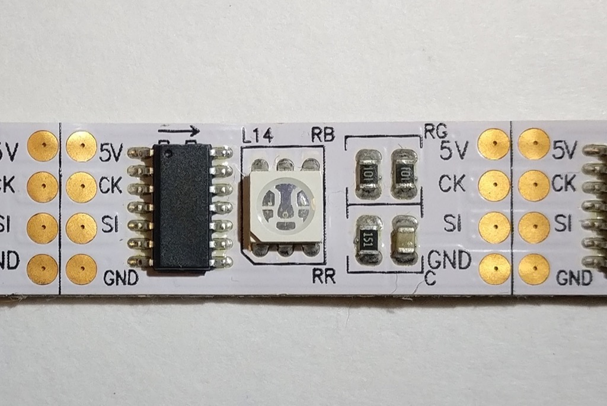
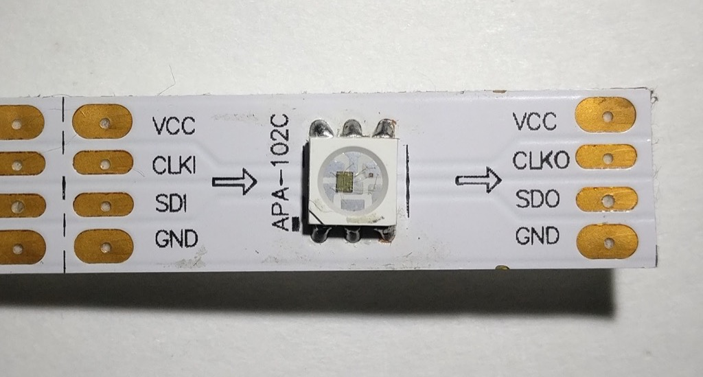
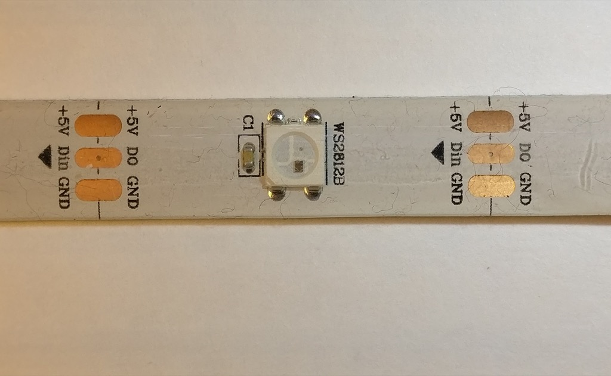
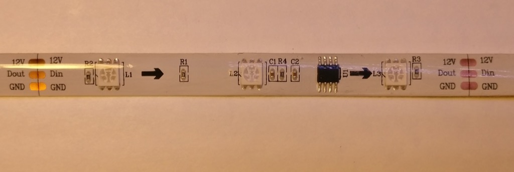
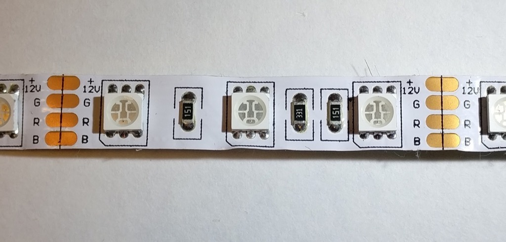
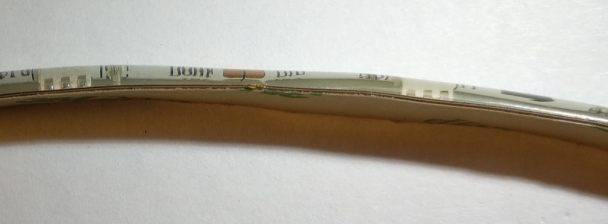
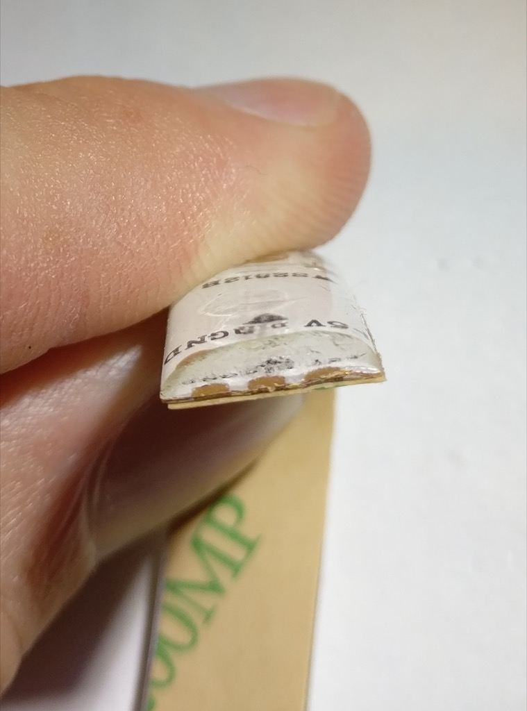
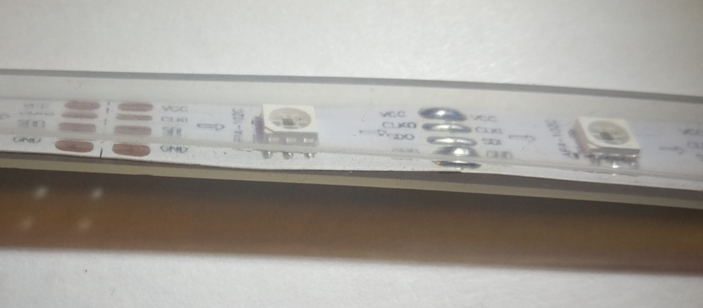
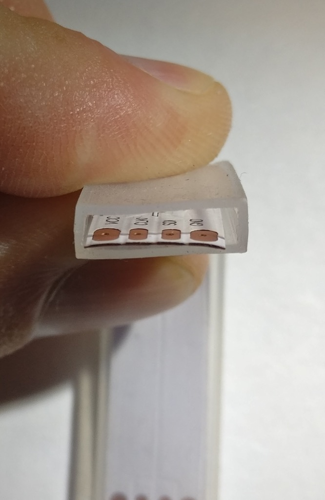

An LED Pixel Selection Guide
What follows is an overview of several types of LED pixel strip, which by totally random chance happen to be the types I use frequently. This is by no means comprehensive.
WS2801
{kind=link}
- 4 wire
- 5 volts
- 25 MHz data rate
- 2.5 KHz PWM refresh
The WS2801 has a moderate PWM refresh and a high data rate. The PWM frequency is fast enough that temporal dithering (such as FastLED or Fadecandy uses) will yield decent results. The 25 MHz data rate is blazing fast, though I’ve personally never run them this fast so I can’t confirm. I have run 2 MHz or so, which is plenty fast enough for many applications.
This is an older design with an external chip controlling the LED. This creates additional weak points when bending the strip, so these are among the least durable type of pixel in my arsenal. I wouldn’t recommend these for costume work.
APA102
{kind=link}
- 4 wire
- 5 volts
- >4 MHz data rate
- 19.2 KHz PWM refresh
This LED is awesome. Temporal dithering will look great, owing to the extremely high refresh rate. The 4 Mhz data rate is just the starting point, I’ve seen reports of 10 MHz and above (I just never need to go that fast). The controller is built in to the LED itself, so there are no external chips to create additional weak points.
There is a separate 31 step global brightness channel that operates independently of the RGB PWM circuit. Assuming your firmware supports it, this is an incredibly useful feature if you are making a project that will typically run at low brightness. Instead of dimming on the color channels, which reduces your maximum color depth, you can just lower the global brightness and still get your full 24 bit color. This is a huge difference considering that 50% intensity reduces your color depth by 8 fold: 16,777,216 color steps becomes 2,097,152. At 10% intensity you are down to around 15,625 steps. With the APA102, you can get to 3.2% intensity and still have all 16 million colors.
The datasheet on these is pretty threadbare, but the more info link below has some detailed information.
WS2812
{kind=link}
- 3 wire
- 5 volts
- 800 KHz data rate
- 400 Hz PWM refresh
These are cheap, which is probably their biggest selling point. They also only use 3 wires instead of 4, which makes wiring much easier. The drawback is requiring precise timing on the signal wire (since there is no separate clock signal). The 400 Hz PWM refresh is also extremely slow, so dithering will generally produce unsatisfactory results.
WS2811
{kind=link}
- 3 wire
- 5-12 volts depending on LED configuration
- 800 KHz data rate
- 400 Hz PWM refresh
These are really similar to the WS2812, in fact, they use the same protocol. The difference is the WS2811 uses an external driver chip and depending on the strip, can be powered from 12 volts. In the 5 volt case, each chip will drive a single LED. In the 12 volt case (pictured above), each chip drives 3 LEDs in series. This means that each “pixel” is actually 3 LEDs in a row. The signal wire can still run at 5 volts (even when the LEDs are powered with 12), though I’ve run mine at 12 volts through a series resistor with no problems (some of my controllers can output 12 volts on the signal line if the board is powered with 12 volts).
Analog/PWM
{kind=link}
- 4 wire
- 12 volts
- PWM is however fast your controller can go
Analog strips are driving with 3 PWM channels, 1 each for red, green, and blue. The entire strip will be the same color. Power is 12 volts (typically, though 24 volt strips do exist). The color depth is dependent on your PWM controller. I have a design which is 16 bits, so I actually have 48 bit color resolution (which is overkill at maximum brightness, but means my color resolution is still excellent at <1% brightness).
While the addressable pixel strips are more popular, if you just need to produce a ton of light over a wide area at the same color, these are still a pretty good value.
Waterproofing
There’s two common types of waterproofing I’ve seen on pixel strips (not including the option of not-waterproof).
IP65
 {kind=link}
{kind=link}
IP65 is a silicone coating over the top of the LED strip. The adhesive backing is still present. Technically these are more water-resistant than water-proof, you probably wouldn’t want to submerge them since the backing of the strip is still exposed. Since the silicone is molded onto the top of the strip, it adds quite a bit of stiffness and greatly improves the durability of the strip. I use IP65 rated pixels for costuming for this reason.
IP67
 {kind=link}
{kind=link}
The IP67 pixels are completely enclosed in a silicone jacket. They are not physically attached to it, just contained within. Technically, this means they are fully waterproof and can be submerged. However, this comes with a few drawbacks. First, if there is any leak in the jacket, water can reach any part of the strip. Second, they don’t get the stiffness advantage of the IP65. For this reason, I think the IP65 is usually the better option.
Thoughts and opinions
Overall, the APA102 is my favorite. It does everything well, though it can be a little more expensive than the other types (in 2017 this seems to be coming down though). I use the extra dimming channel frequently for projects that don’t need to be super bright.
For projects that tend to run full brightness, I like the WS2812. They are extremely cheap, and losing that extra wire makes them a lot easier to work with.
As for waterproofing, I overwhelmingly prefer IP65. The only reason I have any IP67 at all is because I bought them by accident.
What LEDs do you use?